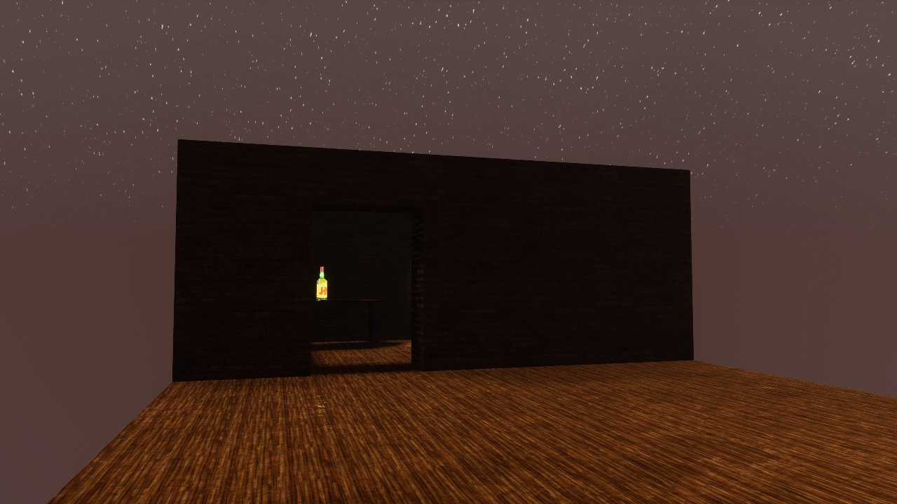
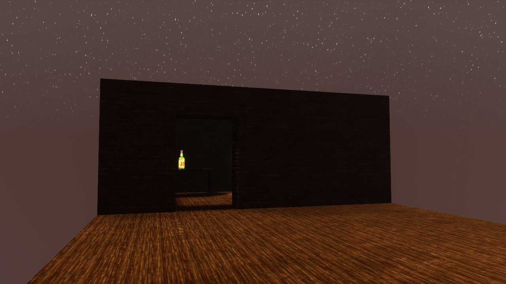

cellule
⏳ game jam
✒️ story-driven
💊 broken spirit
overview
we created this game during a student-organized jam between the game designers at isart digital.
in this interactive experience, you play as a man. confused and not remembering anything, you try to focus on your past to find what has gone wrong and maybe repair yourself.
this game is not friendly and includes harsh themes. it also doesn't help you understanding it so prepare youself if you intend to find out about your previous life.
creation time
72 hours
team size
4 people
theme
cellule
game link
roles
writer
after we found the idea for the narrative of the game, i took time to write the dialogues and make them feel as real as i could back then.
ui designer/artist
i designed to ui to be as minimalist as possible. this realtes to the way the story is told, with the least words and hints we could get away with.
sound designer
i supervised almost every voice recording and also searched the internet for the sound effects and ambiances we needed.
 
